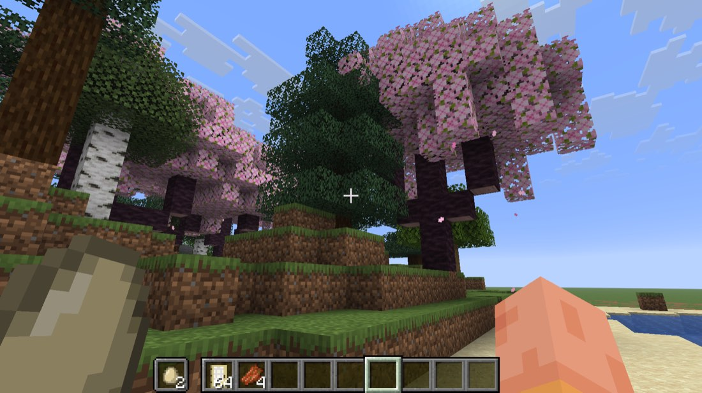
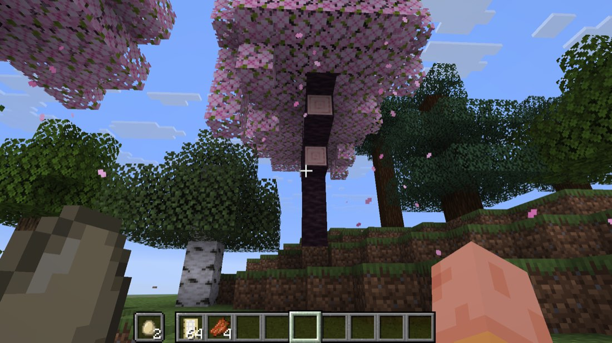
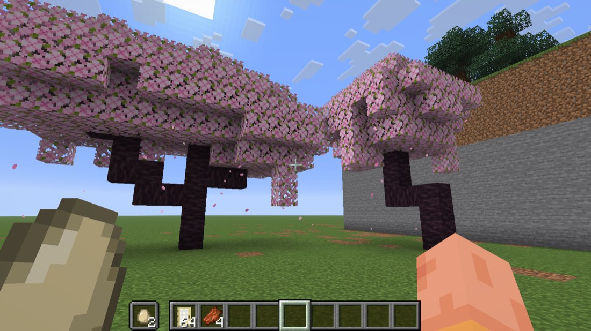
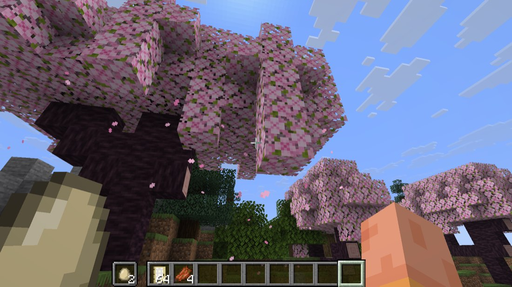

← マインクラフトで試してみた (6 / 7)
2026-11-17に、新しく足した季節「春」の風景を、木の形「マインクラフトの木」で置きました。サクラの枝の形を、2回直しました。

春の風景では、丸い木の3本に1本がサクラになり、残りは明るい緑のオークやシラカバになります。
置いてみると、サクラは平たい傘のような形で、トウヒ・シラカバ・オークとまざって並び、ピンクの花びらの粒も落ちていました。ただ、横に出た枝の原木も、縦に立てたときの木目のままでした。

横に出る枝を、横向きに置いた原木にしました。切り口の年輪の面が、横を向くようになりました。
ただ、幹が外へ1マス進みながら上がる所も横向きにしていたため、まっすぐ立つ幹の途中に、年輪の面が見える所ができました。

ゲームのサクラがどう生えるかを確かめるため、/place feature minecraft:cherry で本物のサクラを2本生やして見ました。
枝は「横に何マスか (横向きの原木) → 上に何マスか (縦向きの原木) → また横」と、階段のように伸びていました。1つの原木は、横か上のどちらか一方にだけ進み、ななめにはつながりません。

枝を1マスずつ、「横に1マス (横向きの原木)」か「上に1マス (縦向きの原木)」のどちらかで伸ばすようにしました。
置き直すと、幹から枝が段になって横に出て、横向きの切り口は、横に進んだ所にだけ出るようになりました。
pink_petals) を置くことは、今回はしていません。